Week 7–8：骨架的边界、残差网络与 12 维动力学对比
本阶段回答三个问题：骨架在大压深、材料对调等边界情况下是否仍然准确；残差网络能修正多少；接入 12 维动力学后，与全网格 FEM+IPC 及各 baseline 相比表现如何。
结论
骨架在浅压下仍有明显偏差：\(d/H_A\le1/6\) 时与标准答案相差 −13% 至 +46%，多数超出 10%，需要继续归因和 debug。\(d/H_A\ge1/3\) 时出现两类失效：多数算例随压深单调偏小，推测源于材料非线性；兔压龙「龙硬 10 倍」在 \(d/H_A=0.408\) 两片夹挤时显著偏大。材料对调时，骨架方向正确而幅度不足。
接入动力学后，鸭撞兔、龙撞兔的峰值压缩误差分别为 1.72% 和 1.61%，hydroelastic 为 4.20% 和 30.30%，Winkler 约 28%。
该结果有三点保留。第一，与骨架、hydroelastic、Winkler 相比，7 个对撞算例中胜出 4 个。第二，网络在动态中的作用接近全局缩放：将骨架能量乘以常数 0.80 即可达到相近精度。第三，每步仅比全网格快 1.7 倍，且慢于 hydroelastic。
问题定义
粗模型以 12 个自由度描述一个物体：\(3\times3\) 矩阵 \(A\) 与平移 \(t\)，物体上一点按 \(x=AX+t\) 运动，\(X\) 为该点的参考位置。\(A\) 可表达整体转动、拉伸与剪切，但无法表达接触处的局部凹陷，因此两个粗物体相碰时会互相穿透。真实物体通过局部凹陷避免穿透，凹陷中储存的弹性能即为待学习的接触能量：
\[U(z_A,z_B)=E_{\text{fine}}-E_{\text{coarse}}\]
其中 \(z_A,z_B\) 为两物体的 12 维状态；\(E_{\text{fine}}\) 为细网格在 12 维状态锁定、其余自由度放松、IPC 保证不穿透时的平衡弹性能；\(E_{\text{coarse}}\) 为粗模型自身的弹性能。标准答案用全网格 FEM+IPC 算：FEM 是有限元，把物体切成几十万个小四面体逐块算弹性能；IPC 是一种保证绝不穿透的接触算法。这样很准，但很慢。接触力是 \(U\) 对 12 维状态的导数，因此 \(U\) 准确即保证粗模型运动正确，仿真只需推进 12 维状态。
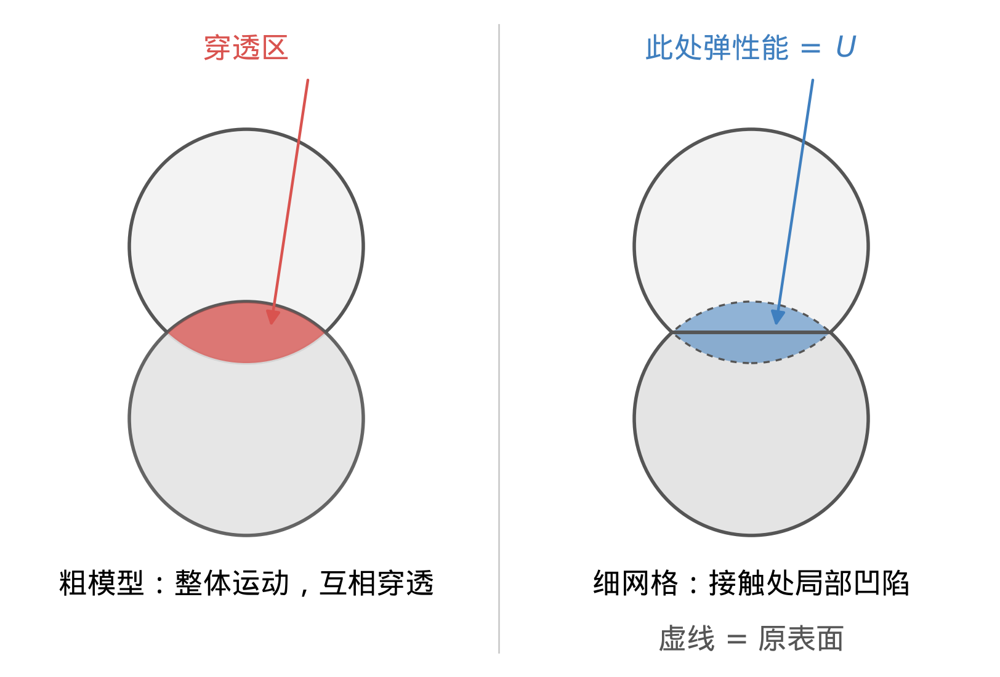
压深 \(d\) 采用接触力学标准定义：两物体自初次接触起沿压入方向的靠近量，即未变形轮廓的最大重叠。下文以兔高 \(H_A\) 无量纲化为 \(d/H_A\)。
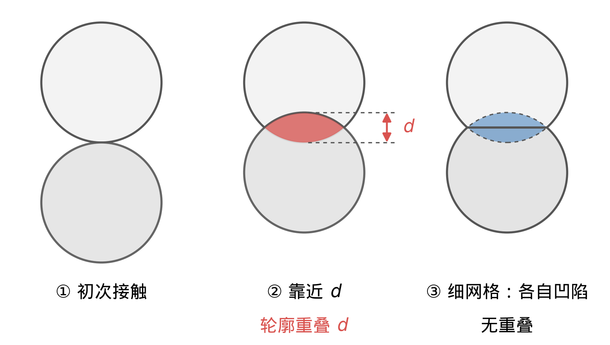
推导：\(U=E_{\text{fine}}-E_{\text{coarse}}\) 与 12 维锁定的定义
第 1 步：自由度分解。 细网格位置写为 \(x=\Phi z+\Psi w\)，\(\Phi z\) 为由 12 维状态决定的仿射形状，\(\Psi w\) 为不改变 12 维状态的局部变形。
- 条件：\(\Psi w\) 与仿射运动正交，使 \(z,w\) 唯一分离。
- ref：静态凝聚，Guyan (1965), AIAA J.；Craig & Bampton (1968), AIAA J.。
第 2 步：对局部自由度取极小。
\[E_{\text{fine}}(z)=\min_w\ \Pi(\Phi z+\Psi w)\quad\text{s.t. 不穿透}\]
- 条件：准静态，即局部变形相对整体运动足够快，可视为瞬时平衡。
- ref：不穿透由 IPC 保证，Li et al. (2020), ACM TOG。
第 3 步：扣除粗模型已计入的能量。
\[U(z)=E_{\text{fine}}(z)-\Pi(\Phi z)\]
粗模型在仿真中已计算 \(\Pi(\Phi z)=E_{\text{coarse}}\)，不扣除则整体变形能被重复计入。
- 条件：本阶段标签均取 \(A=I\)，实测 \(E_{\text{coarse}}\sim10^{-9}\)。\(A\ne I\) 时还需扣除物体无接触时的松弛能 \(U_0(A)\)。
第 4 步：广义力。 接触对 12 维状态的广义力为 \(-\partial U/\partial z\)。
- 条件：\(U\) 只依赖当前状态，接触力为保守力，系统能量守恒。
第 5 步：质量加权最小二乘锁定。 记 \(\omega_i\) 为节点质量占比（\(\sum_i\omega_i=1\)），\(\rho_i\) 为参考构型中相对质心的位置，\(x_i\) 为当前位置：
\[\min_{\bar x,A}\ \sum_i\omega_i\lVert x_i-\bar x-A\rho_i\rVert^2\]
对 \(\bar x\) 求导并利用 \(\sum_i\omega_i\rho_i=0\)，得 \(\bar x=\sum_i\omega_ix_i\)。对 \(A\) 求导：\(\sum_i\omega_i(x_i-\bar x-A\rho_i)\rho_i^\top=0\)，\(\bar x\) 项同理消去，得
\[A=\Big(\sum_i\omega_ix_i\rho_i^\top\Big)S^{-1},\qquad S=\sum_i\omega_i\rho_i\rho_i^\top\]
- 条件：\(S\) 可逆，即物体不退化为平面或线段。
- ref：与导师代码
AffineSplit一致。
第 6 步：锁定 \(A\) 不产生合力。 约束 \(A=A_0\) 作用于节点 \(i\) 的约束力正比于 \(\omega_i\Lambda S^{-1}\rho_i\)（\(\Lambda\) 为乘子），求和得 \(\Lambda S^{-1}\sum_i\omega_i\rho_i=0\)。因此两物体间的合力全部来自接触。
Pipeline
标准答案
将两物体细网格就位并锁定各自的 12 维状态，沿压入方向分步推近至目标压深；每步令其余顶点在 IPC 不穿透约束下放松至能量极小。终态弹性能减去 \(E_{\text{coarse}}\) 即为 \(U\)。
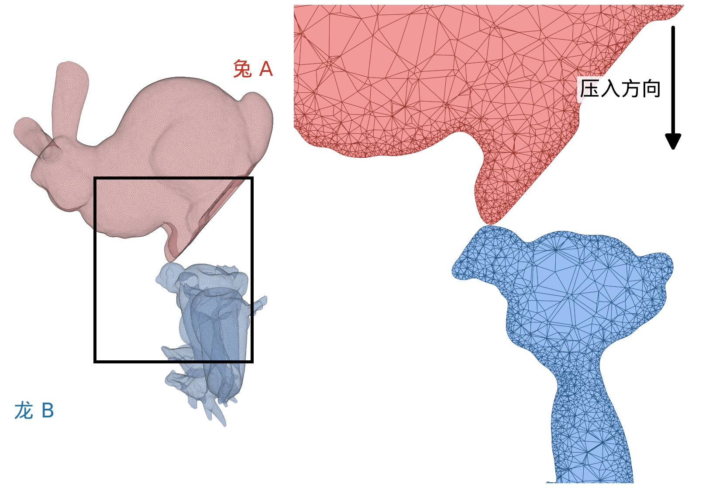
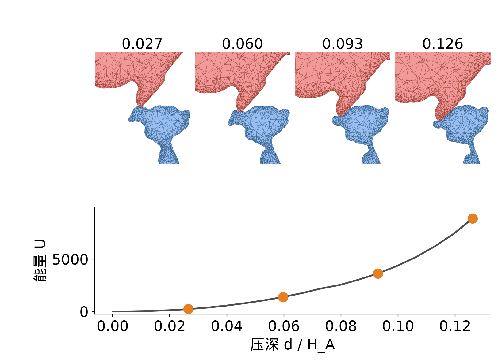
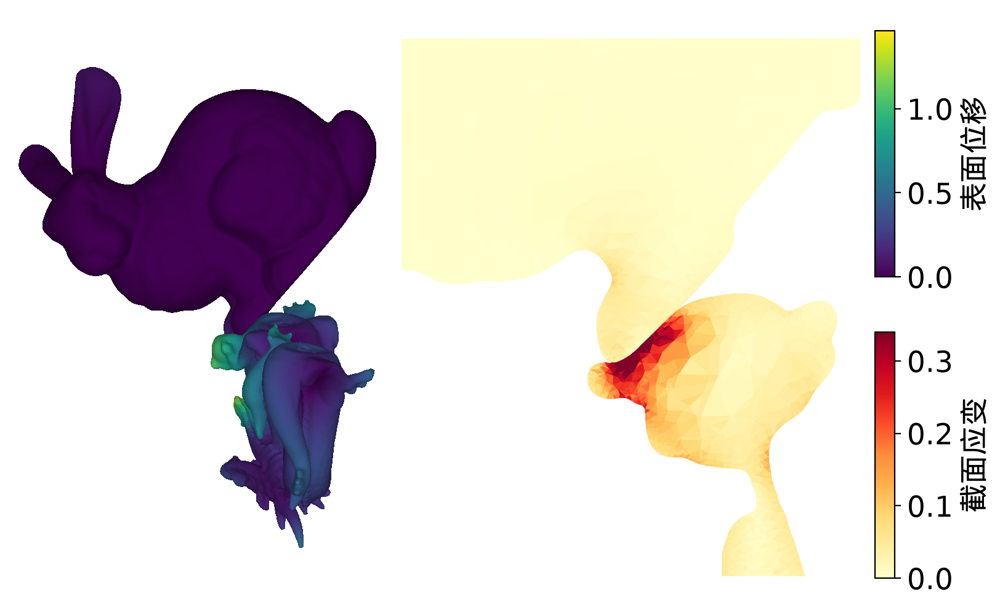
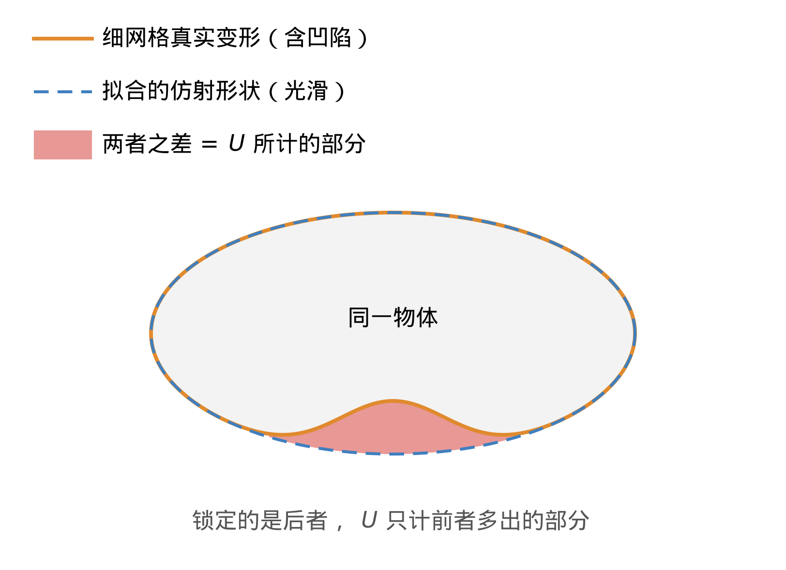
骨架
骨架是线弹性无摩擦接触能量。在重叠区铺设边长为 \(h\) 的网格，以各格压强为未知量求解二次规划（一种带「压强只能推、不能拉」条件的标准最优化问题）：
\[U_{\text{sk}}=\max_{p\ge 0}\;h^2\Big[\sum_ip_i\,w_i-\tfrac12\,p^\top C\,p\Big],\qquad C=C_{\text{Love}}+C_{\text{mode}}\]
\(w_i\) 为第 \(i\) 格两未变形表面的重叠量；\(p_i\) 为该格压强，接触只能推不能拉，故 \(p_i\ge0\)；柔度矩阵 \(C\) 的元素 \(C_{ij}\) 为第 \(j\) 格单位压强引起的第 \(i\) 格表面沉降（柔度就是「加单位压强会陷下去多少」，是刚度的倒数）。最优解满足：有压强的格，沉降恰好抵消重叠；无压强的格不穿透。此时最优值等于表面储存的弹性能。
推导：二次规划的来源及其最优值为弹性能
第 1 步：离散。 每格压强取常数 \(p_i\)，受力 \(h^2p_i\)。
- 条件：\(h\) 足够小，压强在格内变化可忽略。
第 2 步：线弹性叠加。 沉降 \(u=Cp\)。两物体受等大反向压强，各自后退，总让位为两者之和，故 \(C=C_A+C_B\)（串联柔度相加）。
- 条件：线弹性、小变形。
- \(C\) 对称，由 Maxwell–Betti 互易定理。ref：Johnson (1985), Contact Mechanics （出处未核实）。
第 3 步：Signorini 条件。 记剩余间隙 \(g_i=(Cp)_i-w_i\)：
\[p_i\ge0,\qquad g_i\ge0,\qquad p_ig_i=0\]
即只能推不能拉、不穿透、有压强处间隙为零。
- 条件：无摩擦，仅法向压强。
- ref：离散形式见 Kalker 接触理论 （出处未核实）。
第 4 步：等价于凹二次规划。 令 \(f(p)=h^2[p^\top w-\tfrac12p^\top Cp]\)，则 \(\partial f/\partial p_i=-h^2g_i\)。\(p\ge0\) 上极大化的 KKT 条件为：\(p_i>0\) 处 \(g_i=0\)，\(p_i=0\) 处 \(g_i\ge0\)，与第 3 步一致。
- 条件：\(C\) 正定，\(f\) 严格凹，解唯一。静态骨架记录了 \(C\) 的最小特征值；动态对撞中关闭了正定检查（
check_pd=False），且 mode 余项的最小特征值为负（\(-1.66\times10^{-5}\)），动态中 \(C\) 是否始终正定未核实。 - ref：余能变分原理 （出处未核实）。
第 5 步：最优值为弹性能。 表面弹性能为 \(\tfrac12h^2p^\top(Cp)\)。最优解满足 \(p^\top Cp=p^\top w\)，代入得
\[f(p^\ast)=\tfrac12h^2p^\top w=\tfrac12h^2p^\top Cp\]
第 6 步：对重叠的导数。 由包络定理，\(\partial U_{\text{sk}}/\partial w_i=h^2p_i\)，动力学中用于求接触力。
- 条件：最优解唯一。
- ref：Milgrom & Segal (2002), Econometrica。
骨架按以下步骤计算，每步输出均可视化：
步骤 1：放置表面。 由 12 维状态将两物体的未变形表面放到当前位置，接触处出现穿透。
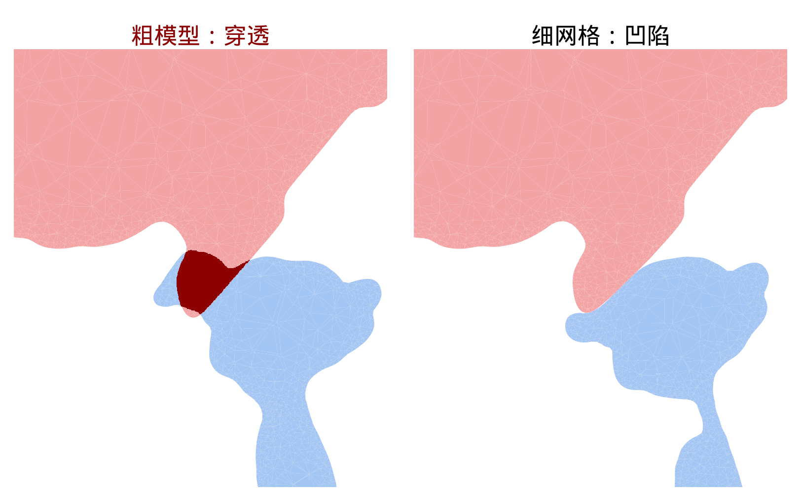
步骤 2：识别接触区并确定法向。 找出重叠区域，按连通性划分为若干接触片，每片确定一个接触法向。
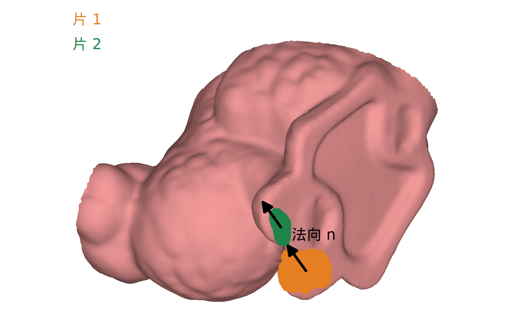
步骤 3：铺设网格。 在垂直于法向的平面上铺设 \(h\times h\) 网格；重叠格向外扩展若干格作为候选格。
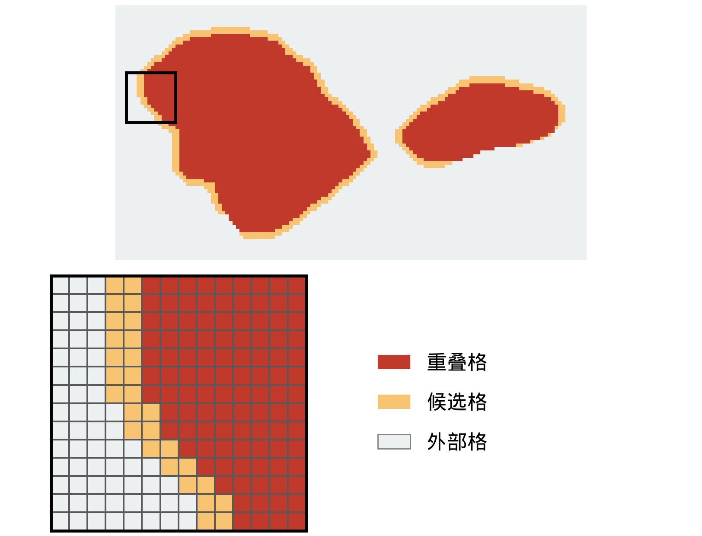
步骤 4：量取重叠。 自每格中心沿法向求交，得到两表面的重叠量 \(w_i\)。
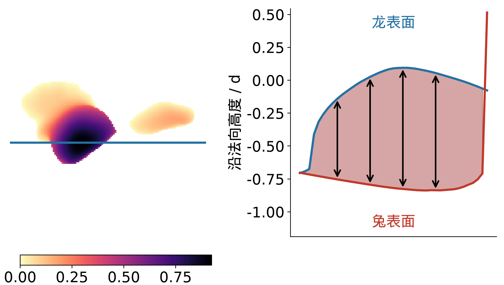
步骤 5：组装柔度矩阵。 骨架的精度取决于 \(C\)。 \(C\) 由两项组成。
第一项 \(C_{\text{Love}}\) 将接触处视为半空间，即无限大、无限厚、表面平整的弹性体。一格受压时周围随之沉降，沉降随距离近似按 \(1/r\) 衰减。该项有解析解，只依赖材料与局部几何。
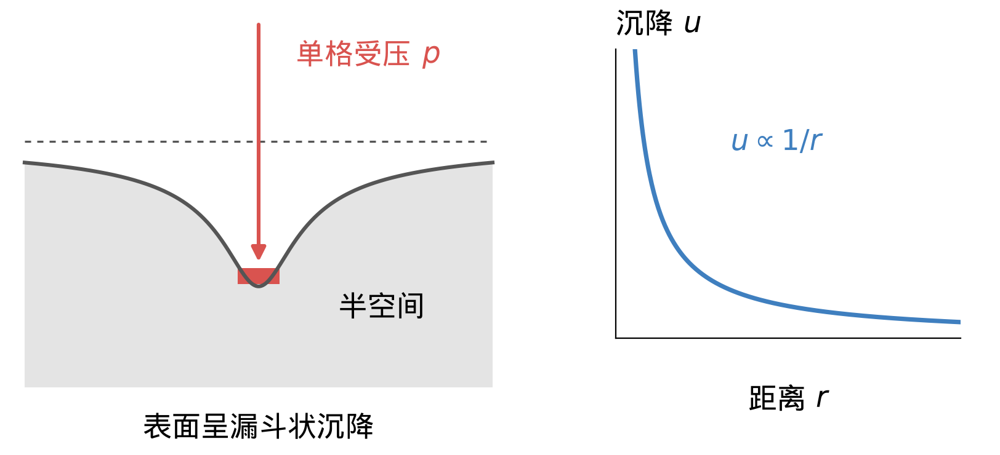
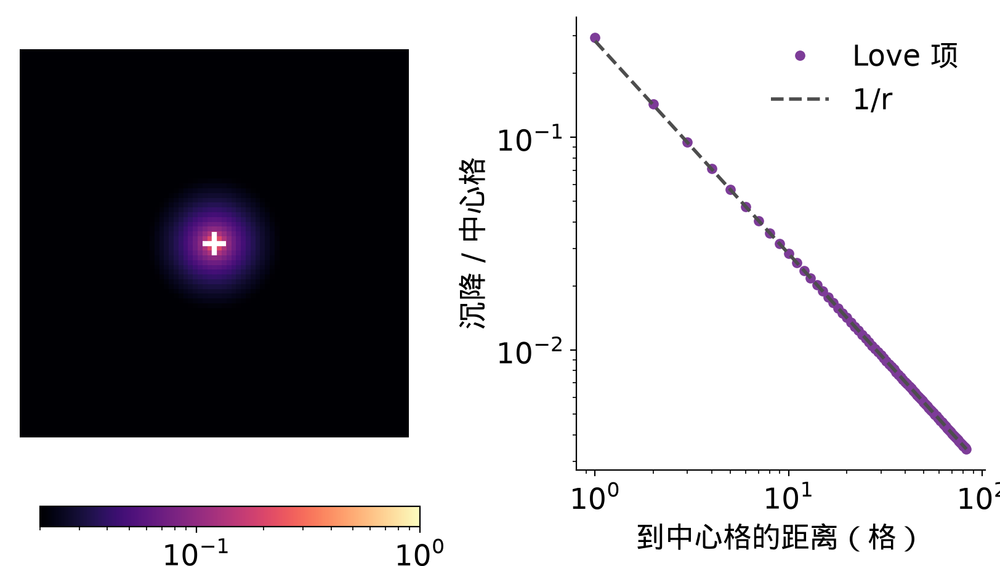
推导：Love 项
第 1 步：Boussinesq 点力解。 半空间表面受法向点力 \(P\)，距离 \(r\) 处法向沉降
\[u(r)=\frac{(1-\nu^2)P}{\pi Er}=\frac{P}{\pi E'r},\qquad E'=\frac{E}{1-\nu^2}\]
- 条件：半空间、线弹性、小变形、仅法向力。
- ref：Boussinesq (1885)；Johnson (1985), Contact Mechanics, Ch. 3 （出处未核实）。
第 2 步：对正方形积分。 第 \(j\) 格受均匀压强 \(p_j\)，第 \(i\) 格中心沉降
\[u_i=\frac{p_j}{\pi E'}\iint_{\text{格 }j}\frac{dA}{\lvert x_i-y\rvert}=\frac{p_j}{E'}L_0(x_i-x_j)\]
该积分对正方形有闭式解，即 Love 核 \(L_0\)。
- ref：Love (1929), Phil. Trans. R. Soc. A。
第 3 步：自项与远场。 \(\iint_{h\times h}dA/r=4h\,\mathrm{asinh}(1)\)，故 \(L_0(0)=4h\,\mathrm{asinh}(1)/\pi\approx1.122h\)；远场 \(L_0\approx h^2/(\pi r)\)，退化为点力解。
第 4 步：两物体叠加。
\[C^{\text{Love}}_{ij}=\Big(\frac1{E'_A}+\frac1{E'_B}\Big)L_0(x_i-x_j)\]
- 条件：忽略法向压强与切向位移的耦合；两物体材料相同时精确，不同时为近似。ref：Dundurs 参数 （出处未核实）。
- 表面倾斜时，加载与读数两端各乘斜面换算因子（表面法向与接触法向夹角余弦的倒数）。
第二项 \(C_{\text{mode}}\) 补偿物体的有限尺寸与形状。每个物体预计算 80 个表面 mode（可以想成这个物体最典型的几种凹法），描述该物体相对半空间偏软或偏硬的部分：薄壁部位整体弯曲，比半空间软；被 12 维锁定的整体变形，又使其比半空间硬。mode 每个物体只算一次，与对手及接触位置无关。
mode 项具体怎么算
一句话：先在真实物体上用有限元实打实算一遍「这里按一下，表面各处陷多少」，再减去「假装它是半空间」时的答案，剩下的差值就是 mode 要补的东西。这个差值变化很平缓，可以压缩成 80 个形状。仿真时把这 80 个形状搬到接触格子上，加进柔度矩阵。
第 1 步：在真实物体上算「按一下、各处陷多少」。 拿一个物体（比如兔子）的四面体网格，表面上有 \(N\) 个顶点（上万个）。对表面上的每一个顶点 \(j\)：在 \(j\) 附近施加一小片「帽子形」的单位压强，顶点 \(j\) 处最大，向周围的三角形线性降到 0（不用一个点，是因为一个点上的力会让那一点陷到无穷深）；把物体的 12 个数锁住，不许整体平移、转动、整体拉伸，和标准答案的锁法一样；用线弹性有限元解一次受这个力之后物体各处怎么变形；读出每个表面顶点 \(i\) 沿法向陷了多少。把所有 \(j\) 都做一遍，得到一张 \(N\times N\) 的表 \(C_\text{lock}\)：第 \(i\) 行第 \(j\) 列表示「在 \(j\) 按，\(i\) 陷多少」，这是真实物体的表面柔度。
第 2 步：在同一张表面上算「假装是半空间」的答案。 还是这张兔子表面、这些顶点，但用半空间公式（下陷 = 力 \(/(\pi E'\times\)距离\()\)）来算「在 \(j\) 按，\(i\) 陷多少」，得到同样大小的表 \(H\)。这个公式只看两点之间的距离，不知道耳朵是薄的、物体是有限大的。
第 3 步：相减。
\[R=C_\text{lock}-H\]
\(R\) 就是「真实物体比半空间多陷或少陷多少」：在耳朵上按，真实情况下整只耳朵会弯下去，比半空间陷得多，\(R\) 在这里是正的（更软）；在厚实的身体上按，本来会有的整体压缩被 12 个数锁住了，比半空间陷得少，\(R\) 在这里是负的（更硬）。要减掉 \(H\) 是因为骨架的 Love 项已经在更细的接触格子上把半空间那部分算过了，mode 只负责补「真实和半空间的差」，否则半空间那部分会被算两次。
第 4 步：把 \(R\) 压缩成 80 个形状。 \(R\) 有上万 × 上万个数，存不下，用起来也太慢。好在它变化很平缓：半空间里那种「按的那一点附近陷得特别尖」的成分已经被减掉了，剩下的是「整只耳朵弯一下」「整个身体被锁住变硬」这种大范围的变化。这种矩阵可以用少数几个形状拼出来：
\[R\approx\sum_{m=1}^{80}\sigma_m\,r_m\,r_m^\top\]
\(r_m\) 是第 \(m\) 个 mode：表面上每个顶点一个数，画出来就是表面上的一种「凹法」，比如「整只左耳往下弯」「背部整体被压平」。\(\sigma_m\) 是这个形状的强度：正的表示这种凹法比半空间软，负的表示比半空间硬。实际代码并不先算出整张 \(R\) 再拆（那样要解上万次有限元），而是用随机化方法：生成 100 个随机的压力分布，对每一个做第 1、2 步，只要 100 次求解；反复乘几遍让主要的形状更突出（幂迭代 4 次）；在这 100 个方向上解一个 100×100 的小特征问题，取出最强的 80 个。这一步每个物体只做一次，十几分钟（兔约 18 分钟、鸭约 13 分钟），存成一张 mode 表；之后不管和谁接触、在哪接触，都直接查表。
第 5 步：仿真时把 mode 搬到接触格子上。 骨架在接触区铺了 \(h\times h\) 的小格子。对每个格子 \(i\)：从格子中心沿接触法向打一条线，碰到兔子表面上的点 \(X_i\)；把这个点换回兔子未变形时的位置 \(\bar X_i=A^{-1}(X_i-t)\)（mode 表是在未变形的表面上存的）；找到 \(\bar X_i\) 所在的表面三角形，用三个顶点的 mode 值按距离加权平均，得到 \(\Phi_{i,m}\)，即第 \(m\) 个 mode 在第 \(i\) 格的值。然后拼成 mode 项：
\[C^\text{mode}_{ij}=h^2\sum_{m=1}^{80}\sigma_m\,\Phi_{i,m}\,\Phi_{j,m}\]
意思是：在第 \(j\) 格按一下，第 \(i\) 格除了半空间算出的下陷之外，还要多陷（或少陷）一个量，这个量等于每个 mode 的强度 × 它在 \(j\) 处的值 × 它在 \(i\) 处的值，对 80 个 mode 求和。两个物体各有一张 mode 表，各自的 mode 项都加上，再和 Love 项相加，得到完整的柔度矩阵 \(C\)，进入二次规划求压强。
回到「薄的地方比半空间软、锁住的整体比半空间硬」： 前者体现在第 1 步的有限元里耳朵会整片弯，减掉 \(H\) 之后 \(R\) 在耳朵区域是正的，于是出现 \(\sigma>0\)、形状集中在耳朵上的 mode，接触落在耳朵上时 \(\Phi\) 很大，mode 项让那里更软；后者体现在第 1 步锁了 12 个数，物体没法整体压缩，\(R\) 在厚实部位是负的，于是出现 \(\sigma<0\) 的 mode，让那里更硬。
局限： 第 1 步是「一次只按一处」算出来的。接触同时落在两片区域、物体被两侧夹住时，几个负 \(\sigma\) 的 mode 会叠加，把表面算得过硬；推测这是兔压龙夹挤那一格到 5.56 倍的原因之一（未核实）。
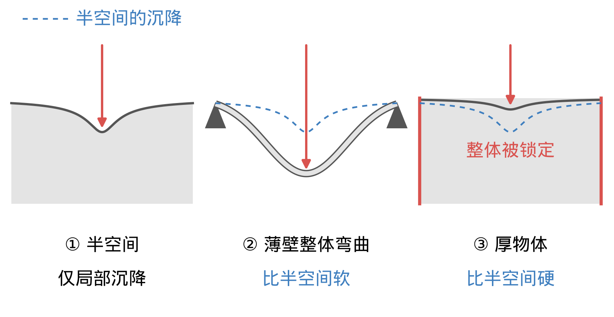
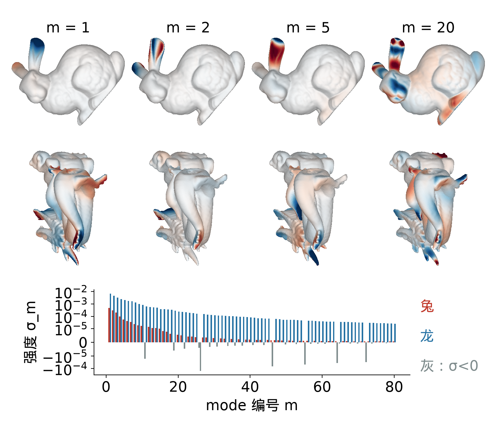
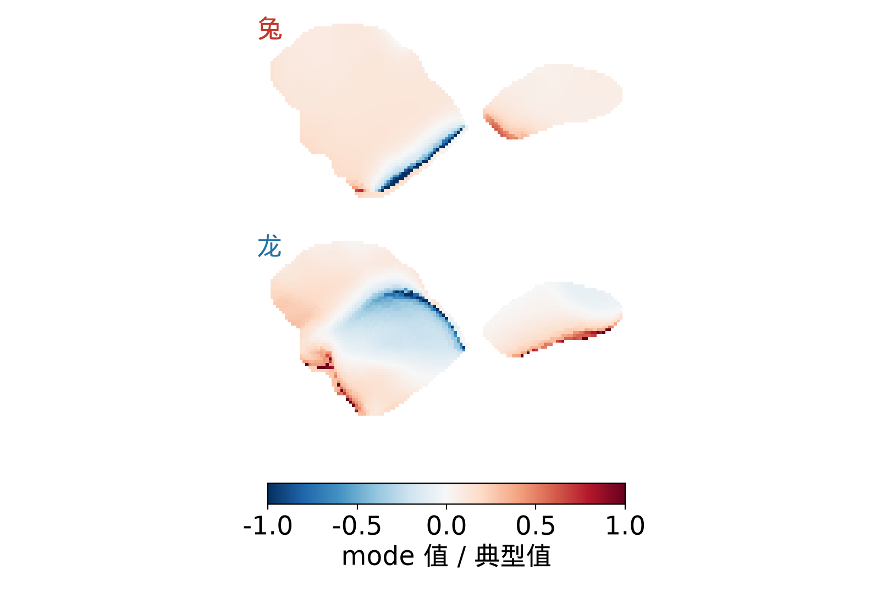
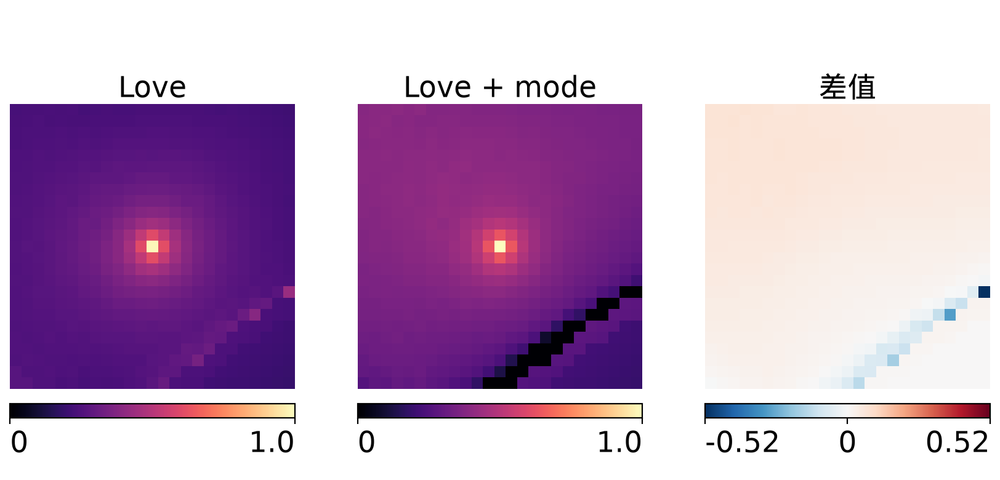
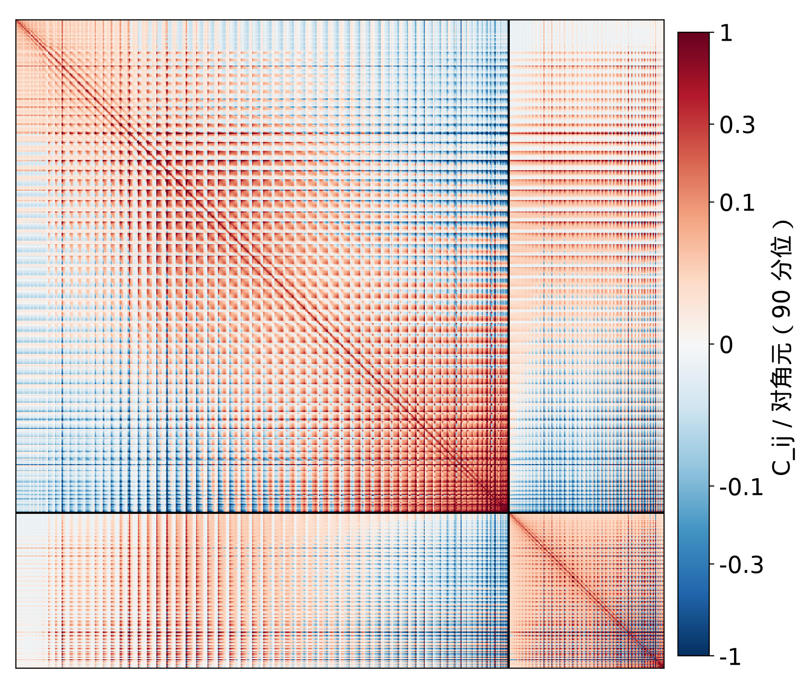
推导：mode 项
第 1 步：真实表面柔度。 以线弹性 P2 有限元组装刚度矩阵 \(K\)。在每个表面顶点施加帽函数形单位压强（该点为 1，向相邻三角形线性降至 0），锁定 12 维状态求解 \(Ku=f\)，读取表面法向沉降，得 \(C_{\text{lock}}\)。
- 条件：线弹性、小变形；锁定方式与标准答案一致。
- ref：有限元教材 （出处未核实）；锁定整体自由度等价于静态凝聚，Guyan (1965)。
第 2 步：同一表面的半空间柔度。 以 Boussinesq 核对两个帽函数作二重面积分，得 \(H\)。
第 3 步：取差。
\[R=C_{\text{lock}}-H\]
Love 项已覆盖半空间部分，mode 项只补真实物体与半空间之差，避免重复计入。
- 条件：\(H\) 与 Love 项为同一物理量的不同离散（网格顶点 vs. 更细的接触格）。
第 4 步：差值是低秩的。 \(C_{\text{lock}}\) 含点力附近 \(1/r\) 型奇异成分，需大量基函数表示；扣除 \(H\) 后余下整体弯曲、锁定硬化等平缓成分，少量 mode 即可覆盖。
- 条件：\(R\) 的特征值衰减足够快。
- ref：解析奇异部分 + 低秩余项的分解 （出处未核实）。
第 5 步：截断特征分解。 以顶点面积 \(W\) 对称化 \(S_R=W^{-1/2}RW^{-1/2}\)，用随机化方法（过采样 20、幂迭代 4 次）求前 80 个特征对 \((\sigma_m,r_m)\)。
- 条件：\(R\) 对称（互易定理）。
- ref：Halko, Martinsson & Tropp (2011), SIAM Review。
第 6 步：映射到接触网格。 将 mode 插值到当前接触格，记为 \(\Phi_{i,m}\)：
\[C^{\text{mode}}_{ij}=h^2\sum_{m=1}^{80}\sigma_m\Phi_{i,m}\Phi_{j,m}\]
两物体的 mode 项相加。
- 条件：mode 在单物体、单片接触下导出。两片同时受压时负 \(\sigma_m\) 叠加，是 3.3 节夹挤算例偏大的来源之一。
步骤 6：求解压强与能量。 用主动集法求解二次规划，得各格压强 \(p_i\)，能量为 \(\tfrac12h^2\sum_ip_iw_i\)。下文记仅含 Love 项的骨架为 \(S_0\)，含两项的完整骨架为 \(S_{80}\)。
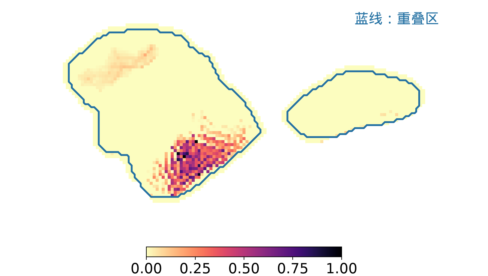
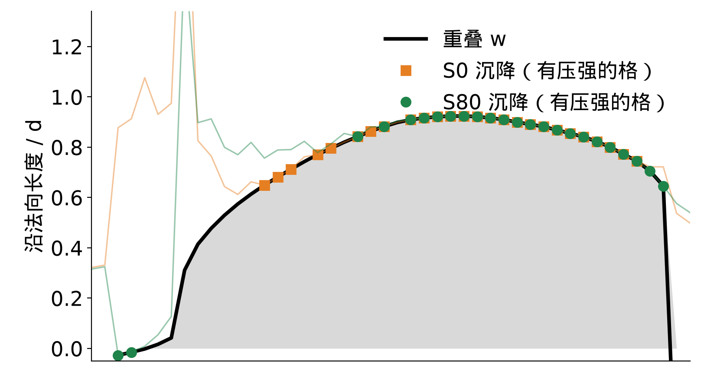
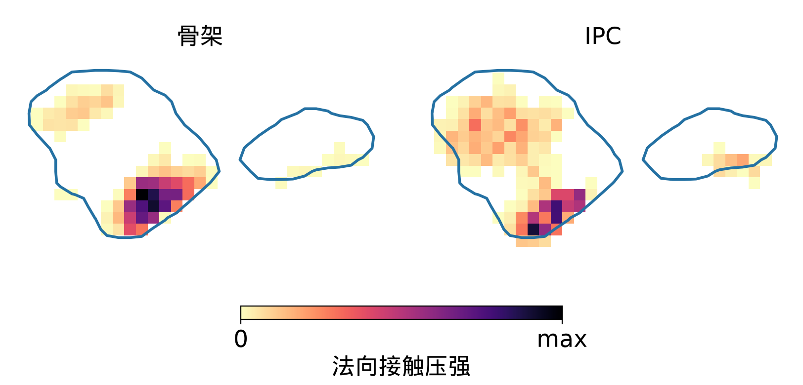
残差网络
网络输出对骨架的对数修正：
\[U_\theta=S_{80}\cdot\exp\!\big(\phi(\varepsilon_c)\,\bar g_\theta(f)\big)\]
\(\bar g_\theta\) 为修正倍数的对数：为零时不修正，为正时增硬，为负时变软；指数保证能量恒正。网络学习的量即「骨架是标准答案的几倍」。
\(\phi(\varepsilon_c)=\varepsilon_c/(1+\varepsilon_c)\) 为包络，\(\varepsilon_c=d/\sqrt{a_0H_{\text{eff}}}\) 衡量压深相对接触尺度的大小（\(a_0\) 为接触面积的等效圆半径，\(H_{\text{eff}}\) 为两物体沿法向厚度的较小值）。浅压时 \(\phi\to0\)，结果退回骨架，已验证的浅压精度不受网络影响；深压时 \(\phi\to1\)，修正完全打开。
网络对两物体对称：\(\bar g_\theta=\tfrac12[g_\theta(f_{AB})+g_\theta(f_{BA})]\)，\(f_{AB},f_{BA}\) 为交换两物体顺序后的两种特征排列，保证「A 压 B」与「B 压 A」能量相同。
输入为 18 个无量纲量（没有单位的比值，比如压深 ÷ 接触区大小、两物体硬度之比；换材料或整体缩放时结论都通用），分别对应骨架的一类失效：压深（\(\log(d/a_0)\)、\(\log(d/H_{\text{eff}})\)），mode 修正的大小与符号（\(\log(S_{80}/S_0)\)、\(\operatorname{asinh}(U_{\text{mode}}/S_{80})\)），每个物体的模量比、泊松比与 Gent 硬化极限，粗状态已有的整体应变，以及物体沿法向的厚度。\(g_\theta\) 为线性函数，仅在线性不足时加入隐藏层。损失为相对能量误差加对数误差项，5 个随机种子训练后取平均。
推导：乘性修正、无量纲输入、包络与对称化
第 1 步：乘性而非加性。 标签能量跨 \(10^3\)–\(10^6\)，加性修正下大能量样本主导训练。对数倍数使各样本处于同一尺度，指数保证能量为正。
- 条件：骨架与标准答案同号、同量级（3.1 节比值范围 0.42–5.56）。
第 2 步：倍数仅依赖无量纲量。
- 两物体模量同乘 \(\lambda\)（泊松比不变）：neo-Hookean 能量对模量一次齐次，平衡构型不变，标签乘 \(\lambda\)；骨架柔度除以 \(\lambda\)，能量亦乘 \(\lambda\)。比值不变。
- 长度同乘 \(s\)：能量密度不变、体积乘 \(s^3\)，两者同乘 \(s^3\)。比值不变。
- 条件：无其他有量纲参数（无重力、无摩擦，IPC 距离阈值相对压深可忽略）。
- ref：Buckingham π 定理，Buckingham (1914), Phys. Rev.。
第 3 步：包络。 \(\varepsilon_c\to0\) 时 \(\phi\to0\)，\(U_\theta\to S_{80}\)；\(\varepsilon_c\to\infty\) 时 \(\phi\to1\)。\(\phi\) 光滑，故力与刚度连续。
- 条件：浅压下骨架已足够准确（Week 5–6 已验证）。
- \(\varepsilon_c\) 取 \(d/\sqrt{a_0H_{\text{eff}}}\) 的依据 （出处未核实）。
第 4 步：对称化。 对两种排列取平均，任意 \(g\) 均得到交换不变的 \(\bar g\)。
- 条件：标准答案本身对交换两物体不变。
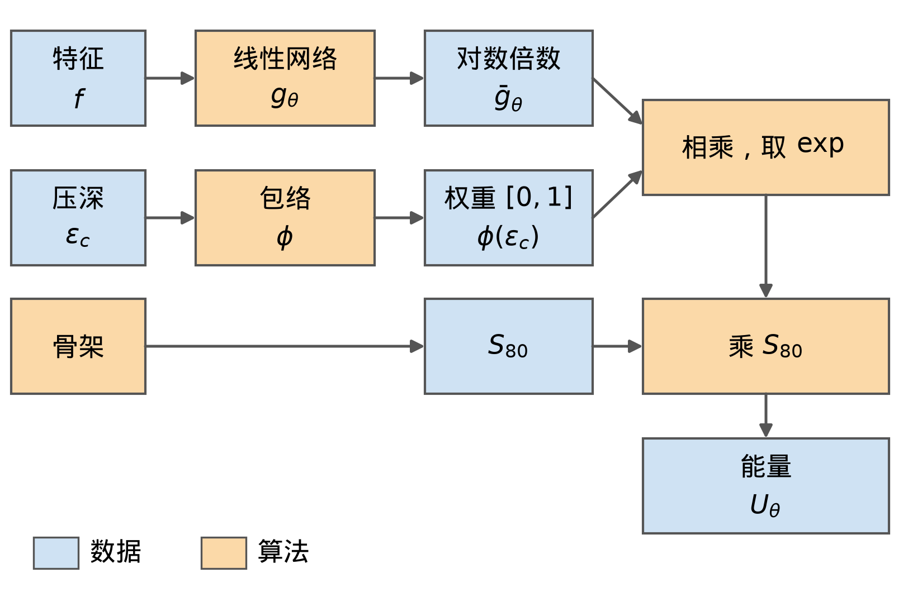
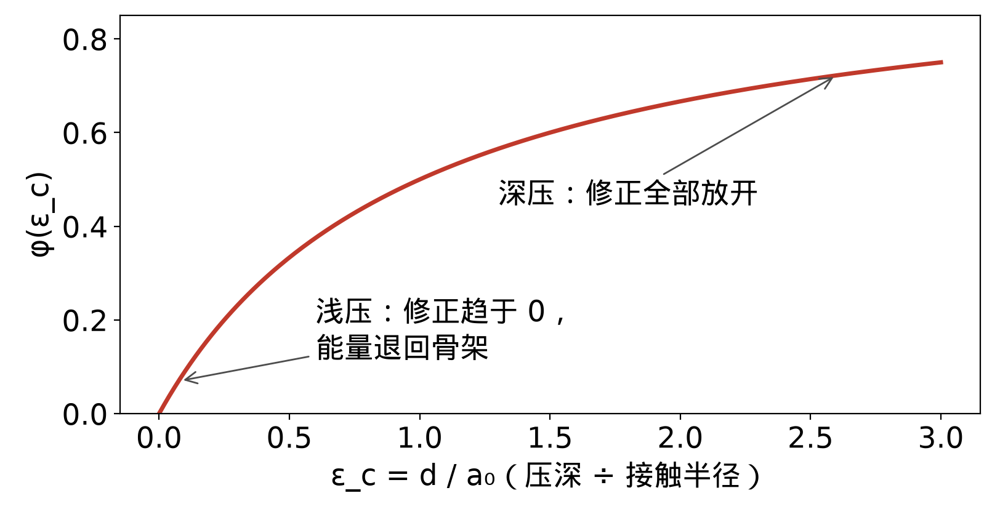
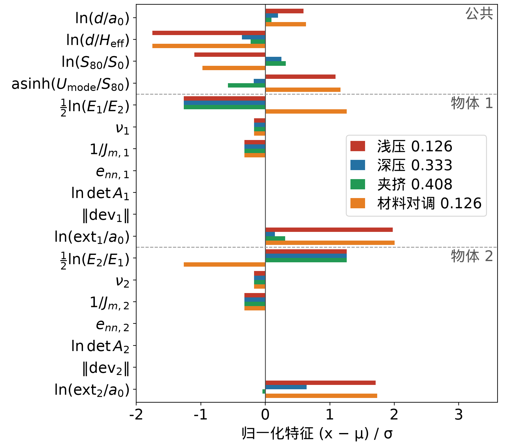
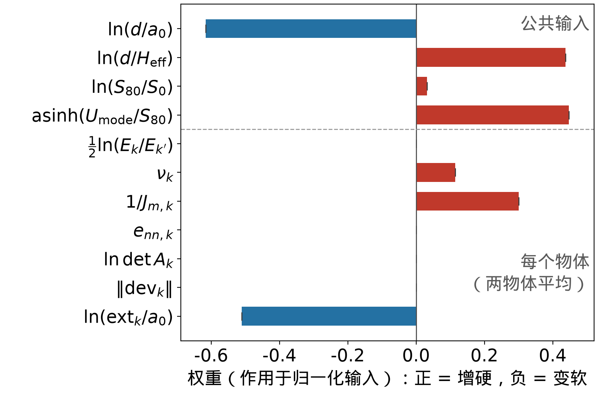
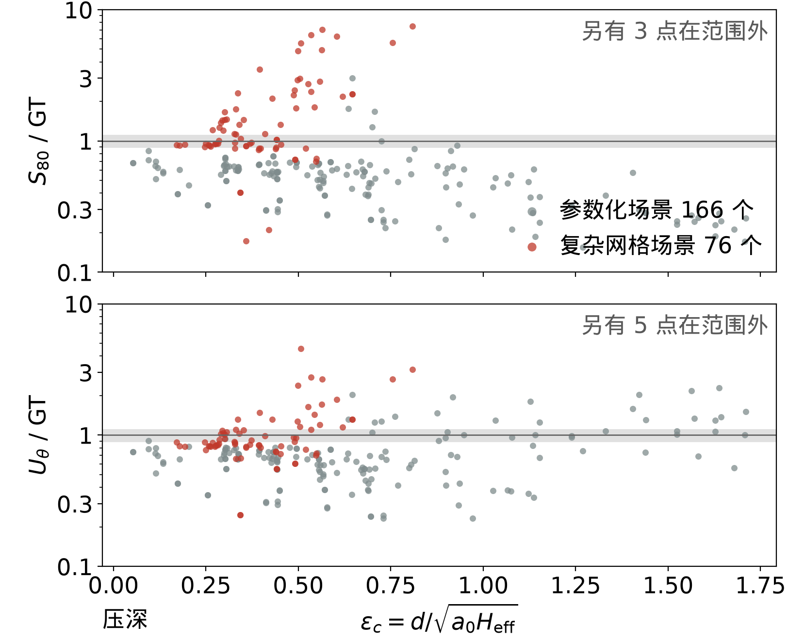
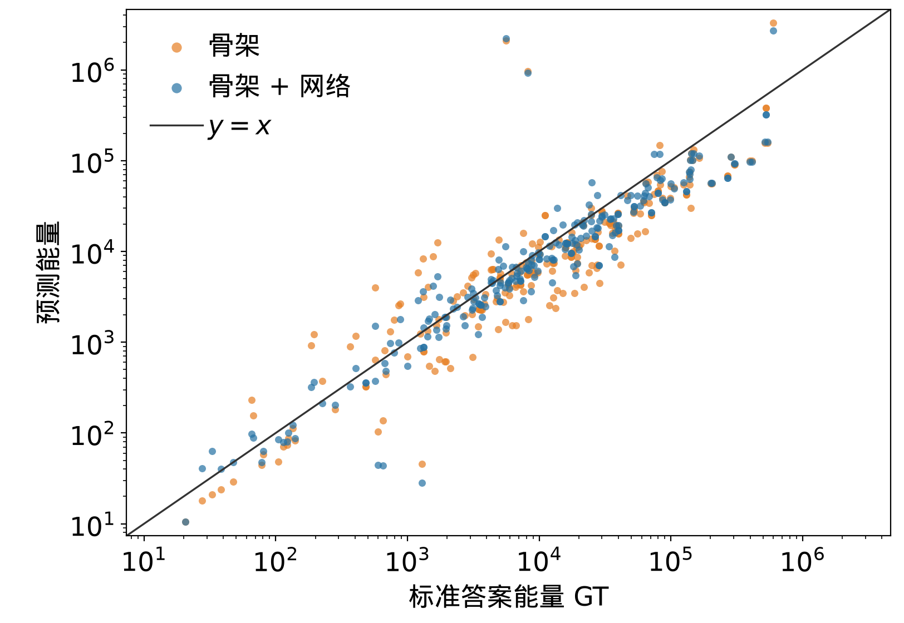
数据集共 220 个场景：68 个复杂网格场景（兔、龙、鸭组成 9 对物体，覆盖多档压深、刚度比 1 与 10、泊松比 0.2–0.45 及 Gent 材料）与 152 个参数化场景（补充形状覆盖）。标签均由细网格 + IPC 计算。各份权重的训练数据不同：v1（4.1、4.2 与薄鳍算例所用）的训练数据未保存；v2 为 152 + 54；v3 为 152 + 68 = 220；v4 为 242。
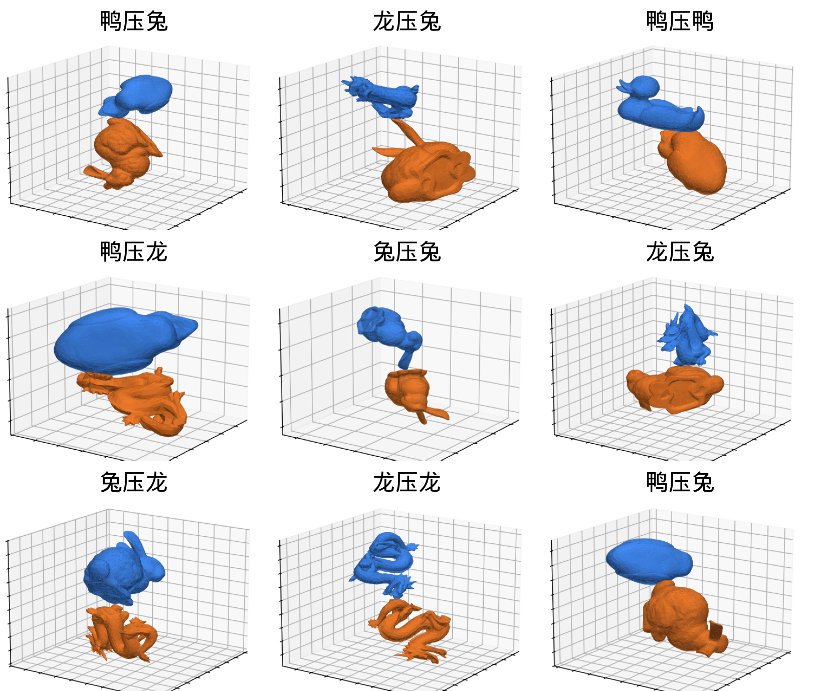
接入动力学
以 \(U_\theta\) 作为接触势能，两物体的运动方程为 12 维拉格朗日方程，无需细网格：
\[M_k\ddot q_k=-\frac{\partial}{\partial q_k}\Big[E_{\text{coarse},k}+U_\theta\Big],\qquad k=A,B\]
\(q_k\) 为物体 \(k\) 的 12 维状态，\(M_k\) 为常数质量矩阵，右端为接触力与整体弹性力。接触力来自同一势能，两物体所受接触力等大反向。每步依次：放置物体，求解骨架，网络给出倍数，求导得力，时间推进。
推导：12 维运动方程与接触力
第 1 步：动能。 \(x_i=A\rho_i+t\)，
\[T=\tfrac12M\lVert\dot t\rVert^2+\tfrac12\operatorname{tr}(\dot AJ\dot A^\top),\qquad J=\sum_im_i\rho_i\rho_i^\top\]
交叉项因 \(\sum_im_i\rho_i=0\) 消去，平移与矩阵部分解耦，质量矩阵为常数。
- 条件：\(\rho_i\) 以质心为原点。
- ref：Lan et al. (2022), ACM TOG（Affine Body Dynamics）。
第 2 步：拉格朗日方程。 势能 \(V=E_{\text{coarse}}(A)+U_\theta\)：
\[M\ddot t=-\partial V/\partial t,\qquad \ddot AJ=-\partial V/\partial A\]
- 条件：无重力、无摩擦、无阻尼，与标准答案设置一致。
第 3 步：等大反向。 两物体整体平移时 \(U\) 不变，故 \(\partial U/\partial t_A+\partial U/\partial t_B=0\)。
- 条件：\(U\) 仅依赖相对构型。
第 4 步：骨架梯度。 由包络定理，压强视为固定：
\[\frac{\partial S}{\partial q}=h^2\sum_ip_i\frac{\partial w_i}{\partial q}-\tfrac12h^2p^\top\frac{\partial C}{\partial q}p\]
第一项为压强乘重叠随状态的变化，第二项为接触区移动引起的柔度变化。网络部分用自动微分。
- 实现：现有代码只计入第一项（各格压强乘法向得力），未计入 \(\partial C/\partial q\) 项，因此接触力只是 \(-\partial U/\partial q\) 的近似，能量守恒在实现上为近似。
- ref：Milgrom & Segal (2002)。
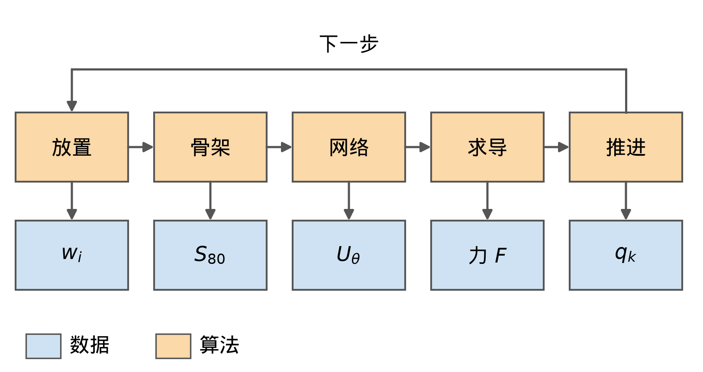
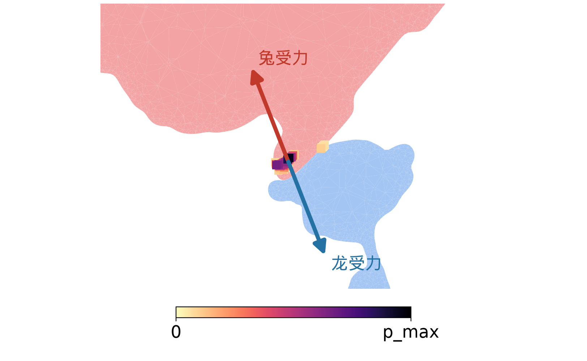
骨架在边界情况下的表现
数据
| 算例 | \(d/H_A\) | \(S_0\)/GT | \(S_{80}\)/GT |
|---|---|---|---|
| 兔压龙 · 兔硬 10 倍 | 0.126 | 2.34 | 1.38 |
| 兔压龙 · 兔硬 10 倍 | 0.167 | 1.84 | 1.20 |
| 兔压龙 · 龙硬 10 倍 | 0.126 | 2.39 | 1.26 |
| 兔压龙 · 龙硬 10 倍 | 0.408 | 3.01 | 5.56 |
| 兔压龙 · 兔 ν 0.2、龙 ν 0.45 | 0.125 | 2.74 | 1.46 |
| 兔压龙 · 兔 ν 0.2、龙 ν 0.45 | 0.333 | 0.79 | 0.70 |
| 兔压龙 · 兔 ν 0.45、龙 ν 0.2 | 0.125 | 2.60 | 1.43 |
| 兔压龙 · 兔 ν 0.45、龙 ν 0.2 | 0.333 | 0.81 | 0.74 |
| 鸭压兔 · 兔硬 10 倍 | 0.125 | 0.75 | 0.91 |
| 鸭压兔 · 兔硬 10 倍 | 0.167 | 0.67 | 0.87 |
| 鸭压兔 · 兔硬 10 倍 | 0.333 | 0.42 | 0.72 |
比值为骨架能量除以标准答案（GT）；大于 1 表示骨架偏硬。
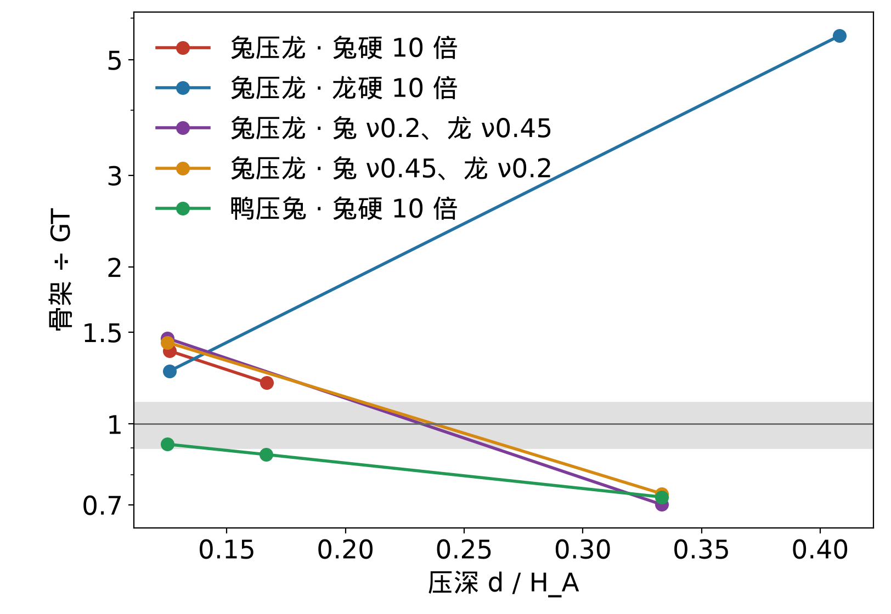
浅压：mode 项不可或缺
浅压下仅用半空间不够，加入 mode 后误差明显缩小，但仍超出 10%，需要继续归因和 debug。\(d/H_A=0.125\) 时，\(S_0\)/GT 为 0.75–2.74，\(S_{80}\)/GT 收窄至 0.91–1.46。两组物体的偏差方向相反：兔压龙中半空间假设偏硬，鸭压兔中偏软。mode 按各物体自身形状计算，能同时校正两个方向。
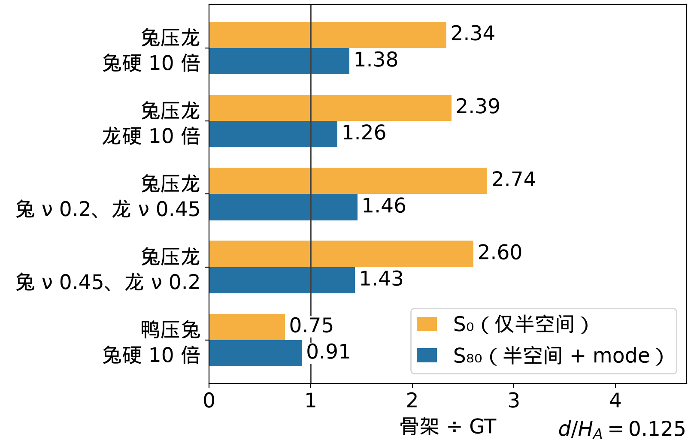
大压深：两类成因不同的失效
第一类：单调偏小。 鸭压兔（单片接触）自 \(d/H_A=0.125\) 至 0.333，比值由 0.91 降至 0.72；兔压龙两组泊松比对调（两片接触）在 0.333 处为 0.70 与 0.74。单片、两片都出现偏小，片数不是区分两类失效的依据。推测成因是材料非线性：骨架为线弹性，标准答案为 neo-Hookean，后者在大应变下硬化，骨架缺失这一部分，偏差随压深增大。验证需同状态下的线弹性标准答案，尚未完成。
推导：材料非线性导致深压偏小
第 1 步：小应变下一致。 neo-Hookean 能量密度在参考构型处的二阶展开即线弹性能量密度。
- ref：Bonet & Wood, Nonlinear Continuum Mechanics for Finite Element Analysis （出处未核实）。
第 2 步：大压缩下 neo-Hookean 更硬。 其体积项含 \(-\mu\ln J\) 与 \((\ln J)^2\)，\(J\to0\) 时能量发散；线弹性为有限二次函数。相同压缩下 neo-Hookean 储能更多，差值随压缩增大。
第 3 步：结论。 接触区应变随压深增大，骨架缺失的能量随之增大，比值单调下降（鸭压兔 0.91 → 0.87 → 0.72）。
- 条件：偏差主要来自材料而非几何非线性（大转动、接触区形状变化）。二者的区分需线弹性标准答案。
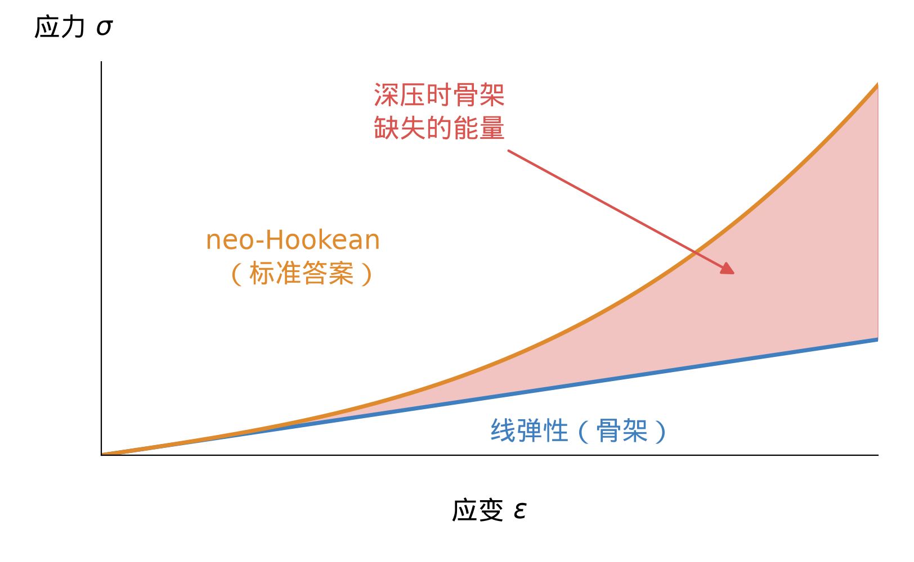
第二类：偏大，且加入 mode 后加剧。 兔压龙「龙硬 10 倍」在 \(d/H_A=0.408\) 时 \(S_{80}\)/GT 为 5.56，高于 \(S_0\) 的 3.01。该算例重叠区在龙身上分为两片，法向夹角约 113°，兔被两侧夹持。推测成因有二：骨架按未变形形状计算重叠，未计入兔向两侧的让位，使第一项已偏大；mode 在单物体上导出，两片同时受压时给出负柔度，进一步抬高能量。
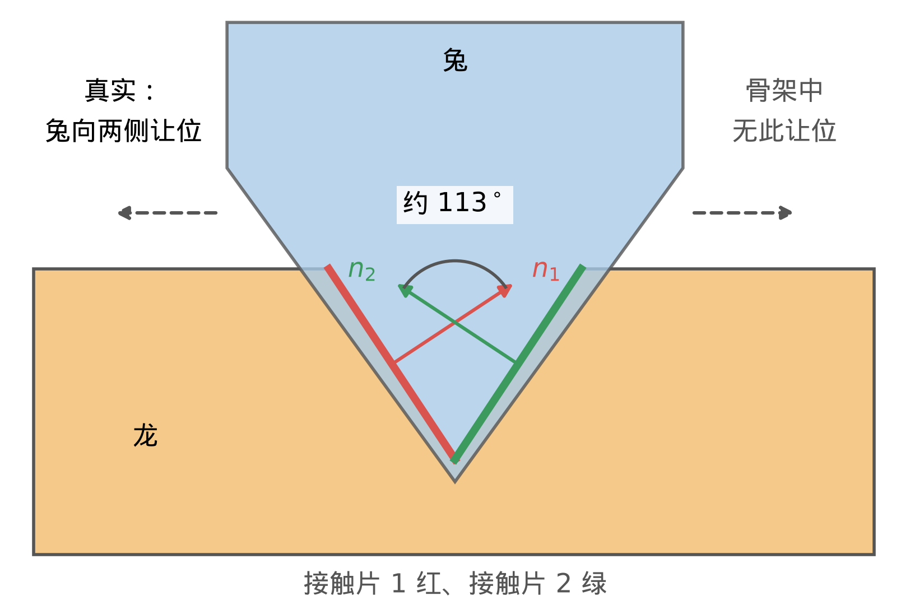
材料对调
材料对调时，骨架方向正确、幅度不足；深压下泊松比对调时方向相反。杨氏模量是材料有多硬，泊松比是压下去时往旁边鼓多少（越接近 0.5，体积越不可压）。
| 对比（同一压深） | GT 之比 | 骨架之比 |
|---|---|---|
| 「龙硬 10 倍」÷「兔硬 10 倍」，\(d/H_A=0.126\) | 1.14 | 1.04 |
| 泊松比对调，\(d/H_A=0.125\) | 1.035 | 1.017 |
| 泊松比对调，\(d/H_A=0.333\) | 0.97 | 1.01（方向相反） |
刚度对调使真实能量相差 14%，骨架仅分辨出 4%。推测这部分差异有相当比例来自非线性，线弹性骨架无法补全，这是引入网络的直接动机（未核实：缺同状态的线弹性标准答案）。
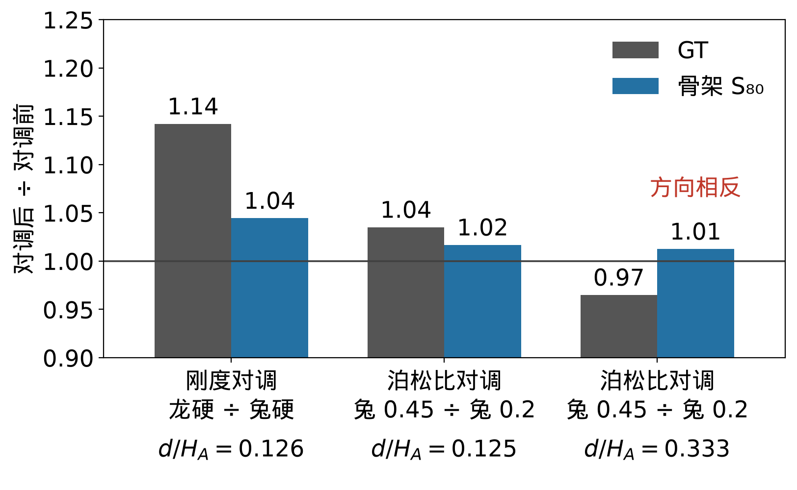
小结
| 情况 | 骨架表现 | 成因 |
|---|---|---|
| 浅压 | 0.87–1.46，仍超出 10%，需归因与 debug | 半空间 + mode 覆盖了主要部分 |
| 大压深（单片、两片均有） | 偏小，至 0.70–0.74 | 缺失材料非线性（推测） |
| 大压深、兔压龙龙硬 10 倍两片夹挤 | 偏大，至 5.56 | 未计让位；多片接触下 mode 给负柔度（推测） |
| 刚度对调 | 方向正确，幅度约 1/3 | 部分差异来自非线性（推测） |
| 泊松比对调 | 浅压幅度减半，深压方向相反 | 同上（推测） |
动力学算例
各方法使用相同的 12 维物体与时间积分，仅替换接触模型；标准答案为全细网格 FEM+IPC。主要指标为峰值压缩误差，即两质心最大靠近量相对标准答案的误差。
指标定义与来源
- 峰值压缩误差：两质心最大靠近量的相对误差。ref：Elandt et al. (2019) 对 hydroelastic 的检验方式。
- 转角误差：\(A\) 极分解所得转角与标准答案投影转角之差的均方根。ref：Dou et al. (2026) （出处未核实）。
- 表面误差：全部表面点位置误差的均方根，以兔高归一化。ref：Pfaff et al. (2021) （出处未核实）。
- 标准答案投影到 12 维后的表面误差（鸭撞兔为 1.01% 兔高）是任何 12 维模型的下限。
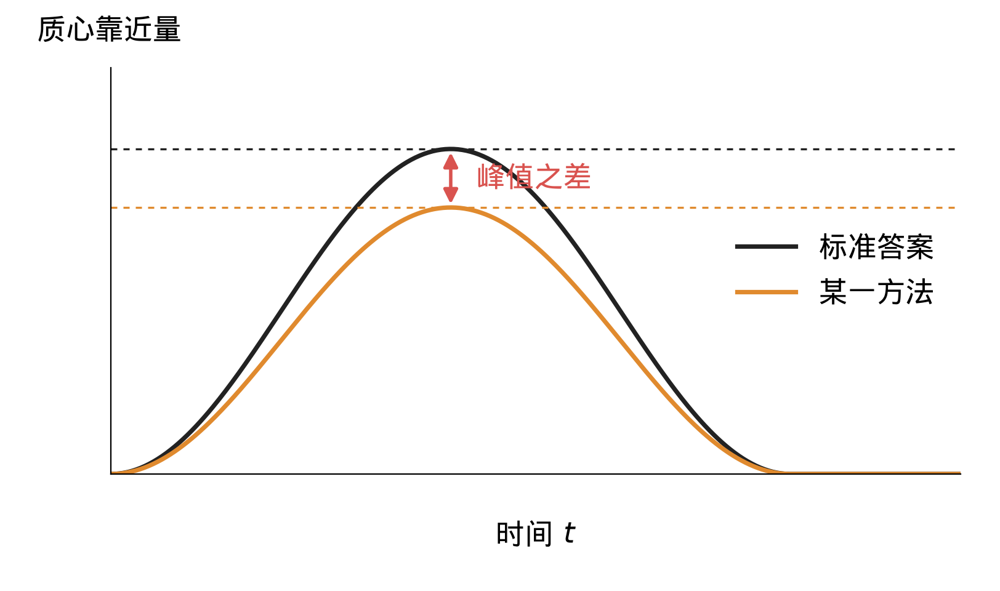
鸭撞兔（等刚度）
鸭以初速度 1.5 撞击静止的兔，标准答案峰值压缩 12.8% 兔高。
| 方法 | 峰值压缩误差 | 转角误差 | 总耗时 |
|---|---|---|---|
| FEM+IPC（GT） | 0 | 0 | 13.6 s |
| 骨架 + 网络 | 1.72% | 0.89° | 8.1 s |
| 骨架 | 8.74% | 1.09° | 6.6 s |
| hydroelastic | 4.20% | 1.13° | 5.2 s |
| Winkler | 27.66% | 2.15° | 5.6 s |
| RigidFormer | 53% | 8.5° | — |
骨架 + 网络误差最小，峰值压缩与转角均优于骨架和 hydroelastic。RigidFormer 仅有刚体状态，两物体互相穿透 19.5% 兔高。
龙撞兔（深压，尖角接触）
标准答案峰值压缩 33.6% 兔高，接触点为龙的尖角。
| 方法 | 峰值压缩（% 兔高） | 峰值压缩误差 |
|---|---|---|
| GT | 33.6 | — |
| 骨架 + 网络 | 33.1 | 1.61% |
| 骨架 | ≈30.2 | 10.06% |
| hydroelastic | 23.4 | 30.30% |
| Winkler | 24.0 | 28.68% |
压深越大，差距越大。hydroelastic 与 Winkler 仅压至 23–24% 兔高，显著偏硬：二者的力只取决于局部重叠，无法反映兔在尖角下的大范围让位。骨架的柔度包含非局部沉降与物体形状信息，偏硬程度小得多；网络在本例中给出 0.53–0.64 倍修正，结果与标准答案基本一致。
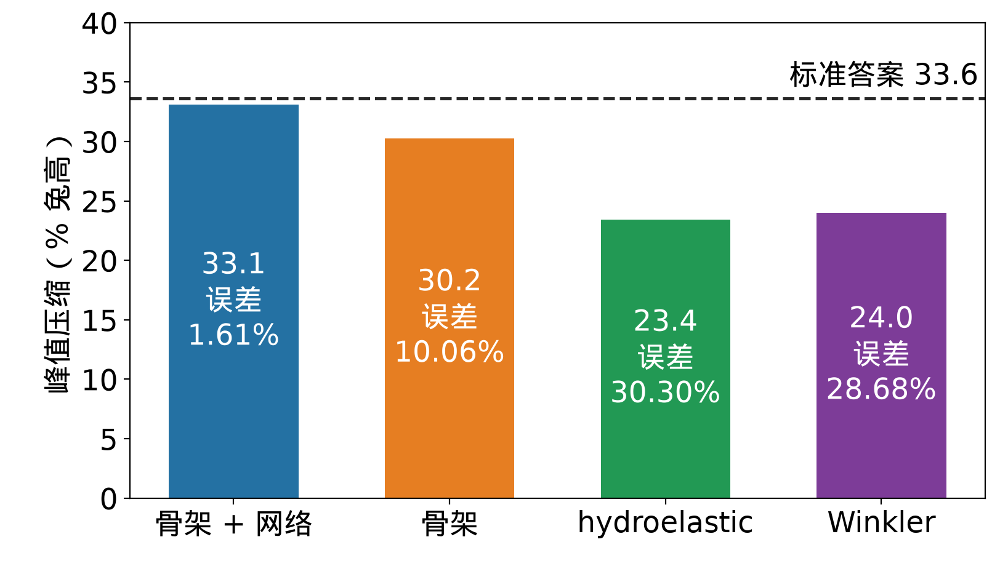
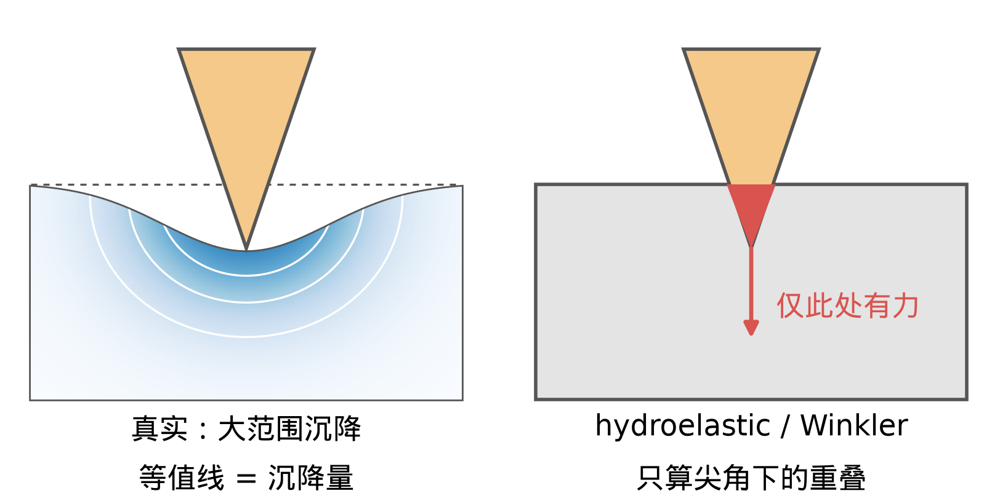
其他算例
以下算例所用权重：小压深与两组 10 倍刚度为 v2（扩充数据后重训），近不可压为 v4（均衡加权重训），薄鳍与 4.1、4.2 同为 v1。
| 算例 | 骨架 + 网络 | 骨架 | hydroelastic | Winkler |
|---|---|---|---|---|
| 鸭撞兔，小压深 | 2.17% | 5.10% | 29.57% | 67.75% |
| 鸭撞兔，鸭硬 10 倍 | 1.53% | 5.72% | 0.65% | 48.83% |
| 鸭撞兔，兔硬 10 倍 | 21.64% | 18.90% | 16.52% | 20.79% |
| 兔撞龙，近不可压（ν = 0.45） | 11.4% | 3.01% | 17.8% | 1.61% |
| 鸭撞龙，薄鳍接触 | 15.2% | 19.5% | 40.9% | 26.2% |
小压深算例表明包络有效，网络未损害浅压精度。软鸭撞硬兔时所有方法误差均为 16–22%，推测是鸭颈整体弯曲，超出 12 维的表达范围。
近不可压算例（泊松比 0.45，材料几乎不能被压缩体积）暴露了网络的缺陷：骨架已通过柔度计入泊松比，误差仅 3.01%；网络却给出 0.97–1.60 倍（平均 1.23 倍）的增硬修正，误差升至 11.4%。网络在未见过的材料组合上会给出方向错误的修正。
薄鳍算例中，标准答案的鳍片整体折弯让位，既非仿射变形也非局部凹陷，12 维无法表达，所有方法误差均超过 15%。
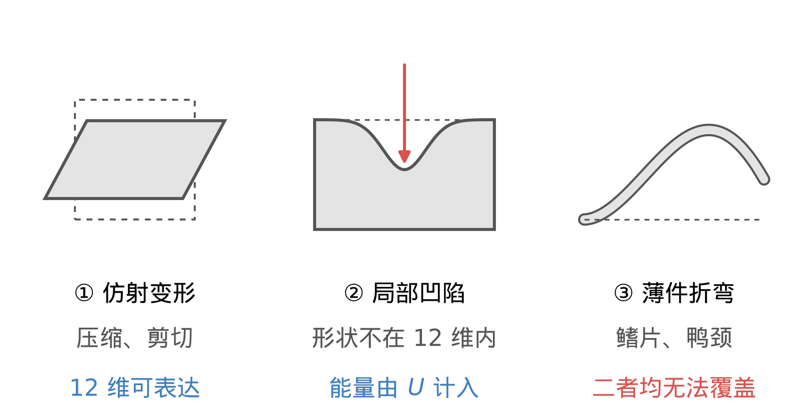
与 baseline 对比
方法比较
| 方法 | 状态维数 | 接触力来源 | 软–软接触 |
|---|---|---|---|
| FEM+IPC（GT） | 全细网格 | 细网格变形 | 支持，慢 |
| 骨架 + 网络 | 12 × 2 | 柔度矩阵二次规划 × 学习倍数 | 支持 |
| hydroelastic | 12 × 2 | 预设内部压力场在重叠体积上积分 | 支持 |
| Winkler | 12 × 2 | 各格独立弹簧 | 支持 |
| RigidFormer | 6 × 2 | 学习的刚体轨迹 | 不支持，穿透 |
| Romero 2023 | 局部变形场 | 学习的变形 | 仅软–刚，逐物体训练 |
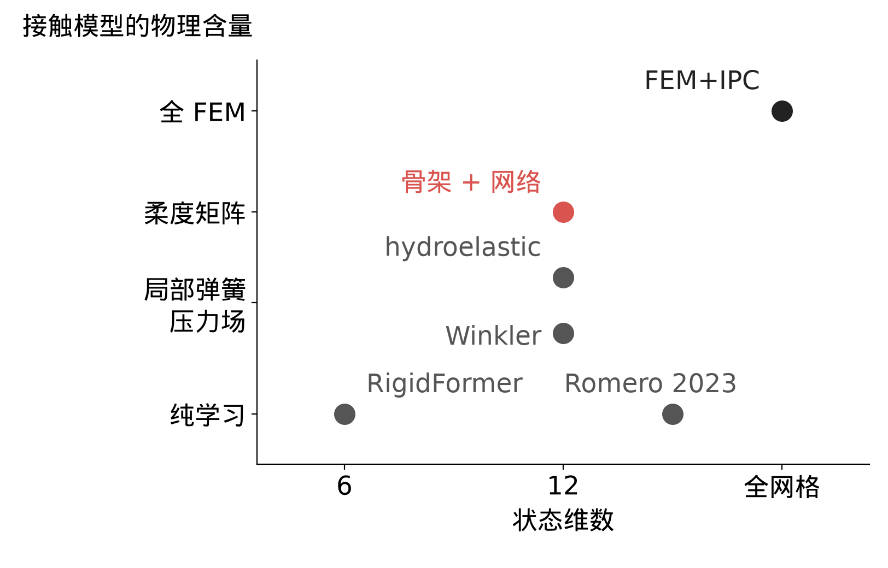
峰值压缩误差汇总
| 算例 | 骨架 + 网络 | 骨架 | hydroelastic | Winkler |
|---|---|---|---|---|
| 鸭撞兔（等刚度） | 1.72% | 8.74% | 4.20% | 27.66% |
| 龙撞兔（深压） | 1.61% | 10.06% | 30.30% | 28.68% |
| 鸭撞兔，小压深 | 2.17% | 5.10% | 29.57% | 67.75% |
| 鸭撞兔，鸭硬 10 倍 | 1.53% | 5.72% | 0.65% | 48.83% |
| 鸭撞兔，兔硬 10 倍 | 21.64% | 18.90% | 16.52% | 20.79% |
| 兔撞龙，近不可压 | 11.4% | 3.01% | 17.8% | 1.61% |
| 鸭撞龙，薄鳍 | 15.2% | 19.5% | 40.9% | 26.2% |
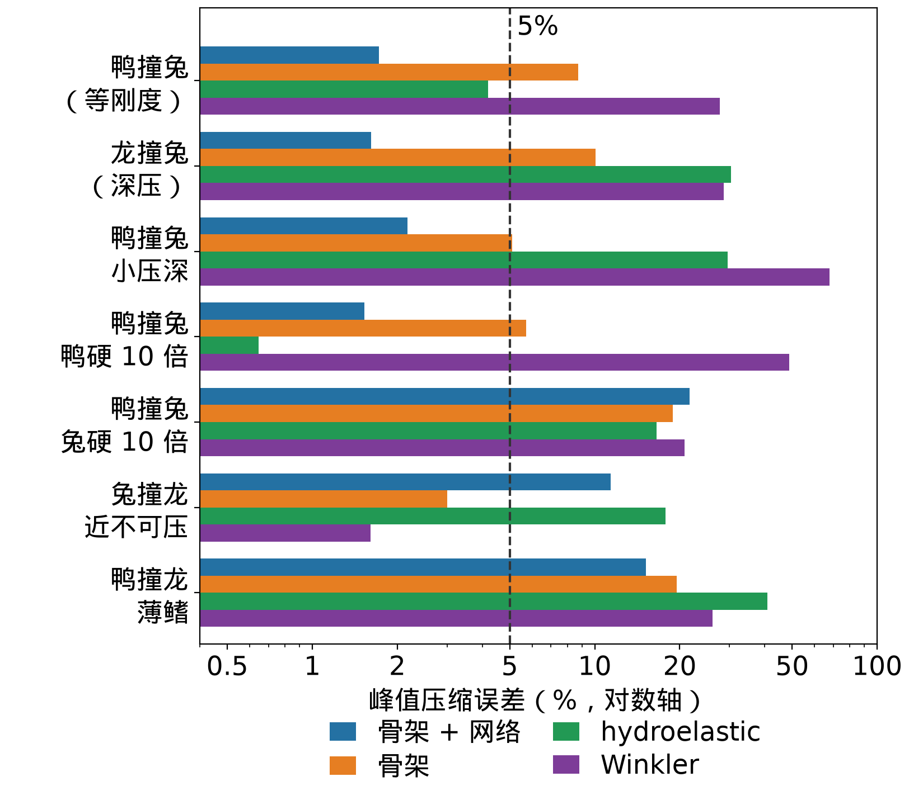
两种学习方法均不支持两软体互压。RigidFormer 在鸭撞兔上峰值误差 53%。Romero 2023 在鸭撞兔上训练集局部变形误差 0.12%，测试集 69.6%，泛化差（训练 / 测试帧划分未核实）。我们的接触模型无需逐物体训练：mode 为每物体一次性预计算，网络仅学习 18 维输入到一个倍数的映射。
精度与速度：与目标的差距
目标是精度显著高于所有 baseline、耗时显著低于标准答案。两项目标均只部分达成。
精度：与骨架、hydroelastic、Winkler 相比，7 个算例胜出 4 个，且胜出时优势显著（深压 1.61% 对 hydroelastic 30.30%，小压深 2.17% 对 29.57%）。未胜出的 3 个：鸭硬 10 倍时 hydroelastic 更优；软鸭撞硬兔时各方法均为 16–22%；近不可压时网络使结果劣化。在 12 维可表达、材料处于训练范围内时，骨架 + 网络的精度显著高于 hydroelastic 与 Winkler，深压时尤甚。
速度：每步 73 ms 对全网格 124 ms，仅快 1.7 倍；薄鳍算例两者均约 120 ms。鸭撞兔总耗时 8.1 s，hydroelastic 5.2 s、Winkler 5.6 s，我们最慢。瓶颈推测在骨架：每步需重新铺设网格并求解二次规划（未做分段计时，未核实）。
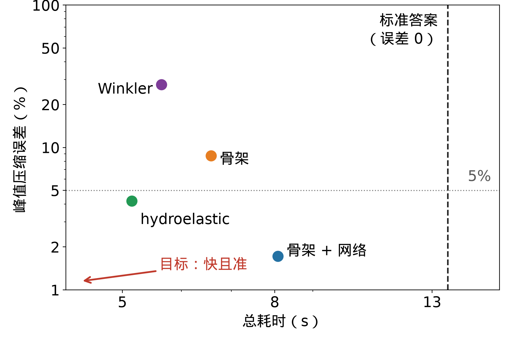
问题与归因
问题 1：网络在动态中的作用接近全局缩放。 对照实验：去掉网络，将骨架能量乘以常数。
| 算例 | 骨架 × 常数 | 骨架 + 网络 |
|---|---|---|
| 鸭撞兔 | × 0.80：0.89% | 1.72% |
| 龙撞兔 | × 0.80：5.58%；× 0.64：2.56% | 1.61% |
鸭撞兔上常数 0.80 优于网络。而静态数据中同压深范围的骨架/标准答案中位数约 1.05，静态并不需要整体变软。因此动态中骨架整体偏硬另有成因，候选为 12 维模型的时间积分方式或标准答案积分器（BDF2）的数值阻尼（时间推进方法本身让运动额外损失能量的数值效应）。在查明之前，不能认为网络学到了接触能量随状态的变化。
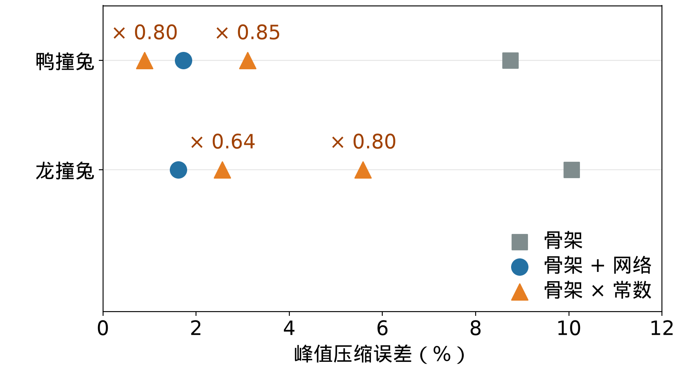
问题 2：网络在增硬与变软两个方向上相互牵制。 加入深压硬化样本后，两类样本的修正方向冲突：软鸭撞硬兔误差 21.64%，近不可压修正方向相反。
问题 3：多片接触下 mode 给出负柔度（夹挤算例 mode 低秩项 \(-5.43\times10^6\)），推测是该算例达到 5.56 倍的原因之一（未核实：尚未与「未计让位」拆开）。若属实，这是骨架的结构缺陷，应在骨架内修正，而非交由网络补偿。
问题 4：薄件弯曲超出 12 维表达能力。 鳍片折弯、鸭颈弯曲影响所有方法，与接触模型无关，需在粗模型中解决。
问题 5：速度瓶颈推测在骨架，即每步重新铺设网格与求解二次规划（未做分段计时，未核实）。
下一步
- 查明动态中骨架整体偏硬的成因，再确定网络在动态中的学习目标。
- 按压深与修正方向均衡加权重训，使同一套权重在增硬与变软两个方向上误差均低于 5%。
- 在骨架内修正多片接触下的负柔度。
- 为粗模型加入弯曲自由度，再评估接触项是否需要调整。